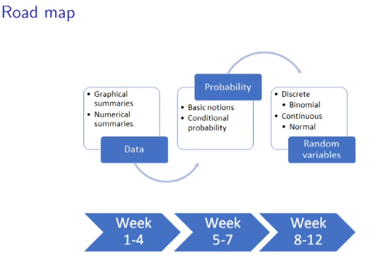

note
Descriptive Statistics for Data Analysis
Learning Objectives
-
Summarise Numerical Data
- To create , download and manipulate datasets.
- To learn methods for presenting and describing sets of data. selecting appropriate graphing techniques for given senario.
- To learn measures that can be used to summarise a data set. e.g-> measures of central tendency.
-
Handle uncertain data with probabilities:
- Understand notions of random experiment, events, probability and conditional probability.
-
Handle random variables and probability distribution.
-
